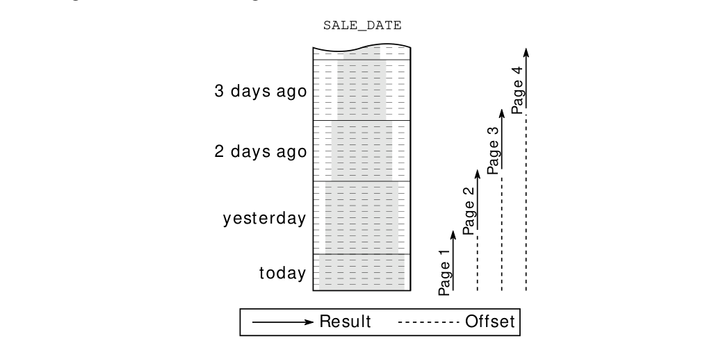

SQL Server
SQL Server không có phần mở rộng “offset” cho mệnh đề top độc quyền của nó nhưng đã giới thiệu phần mở rộng fetch first với SQL Server 2012 (“Denali”). Mệnh đề offset là bắt buộc mặc dù tiêu chuẩn định nghĩa nó là một phần bổ sung tùy chọn.
SELECT *
FROM sales
ORDER BY sale_date DESC
OFFSET 10 ROWS
FETCH NEXT 10 ROWS ONLY;Bên cạnh sự đơn giản, một lợi thế khác của phương pháp này là bạn chỉ cần chỉ mục hàng để lấy một trang tùy ý. Tuy nhiên, cơ sở dữ liệu phải đếm tất cả các hàng từ đầu cho đến khi nó đạt đến trang yêu cầu. Hình 7.2 cho thấy rằng phạm vi chỉ mục được quét trở nên lớn hơn khi lấy nhiều trang hơn.

Điều này có hai nhược điểm: (1) các trang bị trôi khi chèn thêm doanh số mới vì việc đánh số luôn được thực hiện từ đầu; (2) thời gian phản hồi tăng lên khi duyệt ngược lại.
Phương pháp seek tránh cả hai vấn đề vì nó sử dụng các giá trị của trang trước đó làm ranh giới. Điều đó có nghĩa là nó tìm kiếm các giá trị phải xuất hiện sau mục cuối cùng từ trang trước. Điều này có thể được diễn đạt bằng một mệnh đề where đơn giản. Nói cách khác: phương pháp seek đơn giản là không chọn các giá trị đã được hiển thị.